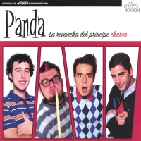
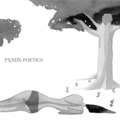
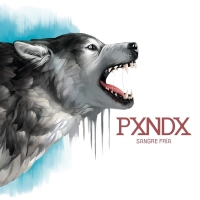

2000 Arroz con Leche
Es el primer álbum de estudio de la banda mexicana Panda. Fue editado en marzo del año 2001 por Movic Records.
Se lanzaron tres videoclips de las siguientes canciones para promocionar el álbum "Buen Día", "Te Invito a Mi Fiesta" y "Si Supieras".
2002 La revancha del principe charro

La revancha del príncipe charro es el segundo álbum de estudio de la banda mexicana de rock Panda editado en 2002.1 Es también el último en contar con Jorge Garza en guitarras.
2005 Para ti con desprecio

A diferencia de su anterior disco (La revancha del príncipe charro), en este álbum sus letras incluyen menos sentimentalismo y un odio al amor.
Este disco contiene 15 canciones, de los cuales 3 son instrumentales, este disco fue criticado por posibles plagios lo cual no ha sido confirmado. La versión original del álbum viene acompañada de un DVD, que contiene vídeos de la gira pasada y del álbum anterior.
2006 Amantes sunt amentes

Este disco incluye un DVD al igual que el anterior. La temática de las canciones habla sobre ridiculizar el amor entre una pareja, aunque de una manera elegante, de las fallas del amor y del amor obsesivo.
Musicalmente, se escucha una evolución en la batería y el nuevo sentido de la voz del vocalista. Además la última canción está dedicada a los no-fanes y/o los llamados "anti-panda".
En principio el disco se llamaría "Del amor y otros demonios", pero esto no se concretó debido a la imposibilidad de contactar a Gabriel García Márquez, autor del libro del mismo nombre para conseguir los derechos de autor. Finalmente, el nombre "Amantes sunt amentes" es un juego de palabras entre el latín y español.
2009 Poetics

El álbum a lo largo de los dos actos, presenta la interacción del hombre con el diablo y el mundo, así como la relación con los sentimientos y los pecados capitales.
2012 Bonanza
El álbum se lanzó el 20 de marzo de 2012. El título del álbum (como lo dice su vocalista) es una ironía, pues la temática hace referencia a todo lo contrario, con letras que hablan principalmente del interior de José Madero. En cuanto a lo musical y a comparación de Poetics (el disco anterior), Bonanza está un poco más cerca de las raíces punk pop de la banda, lo cual no significa regresión sino más bien una reivindicación de la identidad propia. Al mismo tiempo, es igualmente palpable la evolución musical en diversos aspectos y el grado de madurez de las letras escritas por José Madero.
2013 Sangre fría

El 8 de octubre de 2013, empezó a ser descargado desde el sitio web de la refresquera Pepsi debido a una campaña comercial, aun así, el álbum salió a la venta el 13 de diciembre de 2013 en su forma física; será el primero de la banda editado por el sello Universal Music México, pues a mediados de años se unió a esta disquera.
Para este disco, la banda vuelve a contar con la producción de Adrián "Rojo" Treviño, quien ha colaborado en la mayoría de los discos de la banda. El disco completo contiene 14 canciones y un DVD de grabación en estudio así como partes del tour de Bonanza, el cual salió en físico el 13 de diciembre de 2013. A sólo 3 días de su lanzamiento, el disco alcanzó Disco de Oro y Disco de Platino por sus altas ventas.